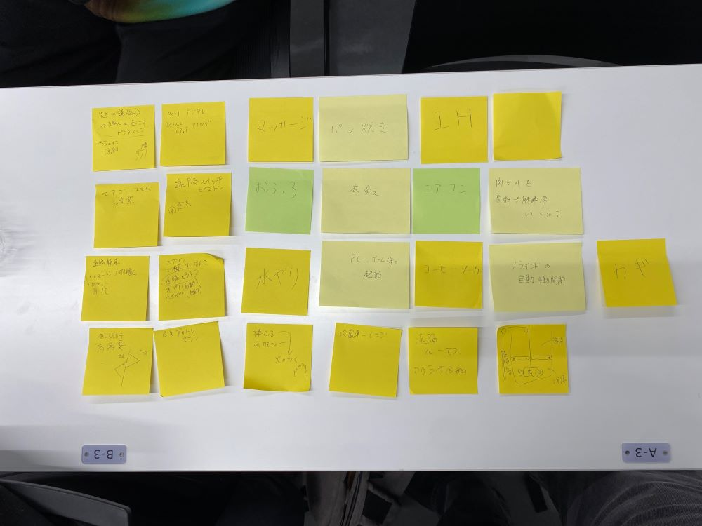
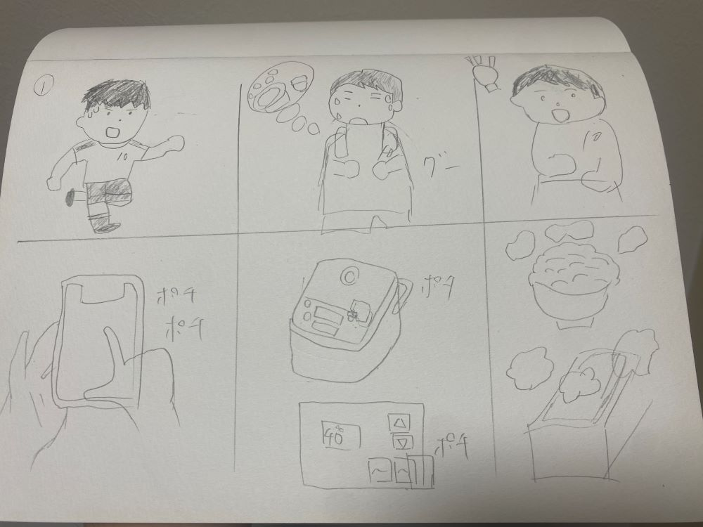

第2回デザイン演習
IoTとは何か
IoT（Internet of Things）は、物理的なデバイスや機器がインターネットに接続され、データの送受信や相互通信を行う技術や概念のことです。つまり、IoTは「モノのインターネット」とも呼ばれ、様々なデバイスがインターネットを介して相互に情報をやり取りすることを可能にします。
例えば、スマートホームのセンサーやアクチュエーター、産業用のセンサー、ウェアラブルデバイス、自動車、家電製品などがIoTの一部として挙げられます。これらのデバイスは、センサーを使って環境や操作データを収集し、その情報をクラウド経由で送信し、遠隔から制御や監視を行うことができます。
IoTの利点は、効率の向上、リアルタイムなデータ収集、自動化の促進、および新たなビジネスモデルの創出などです。一方で、セキュリティやプライバシーの懸念、大量のデータ処理の課題、および標準化の問題などもあります。（ChatGPTより）
IoT(遠隔操作)で何ができそうか？グループワークした内容（ポストイット画像）

自分たちの班では外出時に家での家事を遠隔で操作することで時間を有効に使えれるようなものができないかというアイデアが多かった。
IoT(遠隔操作)で何ができそうか？自分で考えたアイディア（スケッチ）

外出時に、遠隔でお風呂を沸かせたり、炊飯器を炊くことで帰ってきてすぐに、あったかいお風呂にはいれるし、あったかいご飯を食べれる。
ボタンを押すデバイスを遠隔で操作して動かす。ほかにも洗濯機やクーラーなどにも使える。生活がとても時短になる。